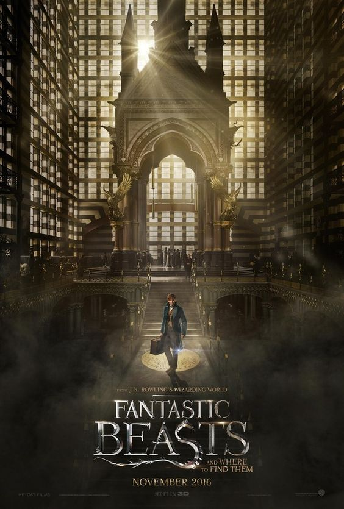

FANTASTIC BEASTS PLOT
Fantastic Beasts is a film series directed by David Yates, and a spin-off prequel to the Harry Potter novel and film series. The series is distributed by Warner Bros. and consists of three fantasy films as of 2022, beginning with Fantastic Beasts and Where to Find Them (2016), and following with Fantastic Beasts: The Crimes of Grindelwald and Fantastic Beasts: The Secrets of Dumbledore .
CAST
Eddie Redmayne as Newt Scamander
Katherine Waterston as Tina Goldstein
Dan Fogler as Jacob Kowalski
Alison Sudol as Queenie Goldstein
Ezra Miller as Credence Barebone
Jon Voight as Henry Shaw Sr
TRAILER